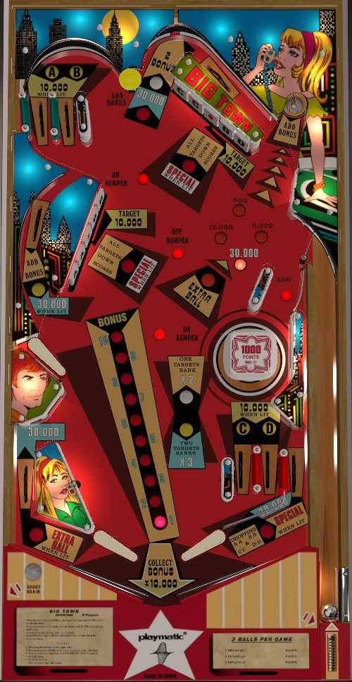

Shoot drop targets. Clearing 1 or 2 banks earns 2x or 3x bonus; bonus is built at the left side lane, upper right saucer, or top mushroom bumper. Bonus advances are worth 10,000 each. Completing the As, Bs, Cs, or Ds lights the corresponding rollover lanes to score 10,000 instead of 500.
The below picture of Big Town's playfield was taken from the VPX recreation by Pedator.

There is no skill shot on Big Town. A plunged ball should go across the table up to the A-B top left lanes. Be careful of the potential of a plunge not quite making it this high and smacking into the wall that forms the right side of the B lane, as this is a potential center drain risk.
There are two 5-banks of drop targets: the left bank and the top bank. The left bank includes two As, a star, and two Bs. The top bank includes two Cs, a star, and two Ds. Any letter drop target scores 500 points. Either star drop target scores 10,000 points.
Completing either bank awards 2x bonus and lights the center top lane, which runs behind the top bank of drop targets, to score 30,000 points. Completing both banks awards 3x bonus and resets them. When bonus multiplier is advanced to 3x, completing either drop target bank again scores a Special, which can score a free game or an extra ball (maximum 1 extra ball per ball in play).
Knocking down both targets of a letter counts as collecting that letter, which lights one rollover lane. A and B have rollover lanes in the top left, while C and D are the right in lanes. These lanes score 500 points, or 10,000 when lit.
If all 4 are lit at once, the right out lane will be lit for Special. This is deceptively difficult, because if both banks are completed, they reset, which undoes all A-B-C-D progress. Thus, to light this Special, you must complete all of the drop targets corresponding to A, B, C, and D while avoiding at least one of the Stars. This is impressively convoluted, and if Specials are important to you, just go for the bank completion Special instead.
The saucer in the upper right scans between 5 values: 500, 5,000, 10,000, or 30,000 points, or Extra Ball. Landing in the saucer awards 1 bonus advance plus whichever score value is lit. Landing in this saucer when Extra Ball is lit does not award an extra ball directly; rather, it lights an extra ball that must be collected at the left out lane.
There are 3 rollover buttons on the playfield: the middle one turns the pop bumper off, and the upper and lower buttons turn it on. The pop bumper is on the middle-right and scores 100 points or 1,000 when lit.
When the bumper is lit, the left side lane is supposed to be lit for 30,000 points instead of its usual 5,000 (plus the bonus advance it always gives), and the top lane behind the upper drop targets is supposed to be lit for 2 bonus advances (in addition to its 5,000 points, which becomes 30,000 after completing one bank of targets). The behavior of this feature seems inconsistent; there may be an operator setting, which I have not confirmed, that requires the bonus multiplier to be at least 2x or 3x before these lanes can be lit.
The top yellow mushroom bumper scores 500 points and a bonus advance.
On the left, there is no in lane, and the flipper backs up directly to the slingshot. The out lane scores 30,000 points, plus an Extra Ball when lit; it is lit by landing in the upper right saucer when the scanning award has selected Extra Ball. On the right, there is no slingshot, and instead there are 2 in lanes; these are the C and D lanes corresponding to the top bank of drop targets, and score 500 points or 10,000 when lit. The right out lane scores 30,000 points, plus a Special when lit; the Special is lit by completing all of the A, B, C, and D targets while having at least one Star drop target still standing.
Bonus is advanced by the left side lane, upper right saucer, and yellow mushroom bumper. Each bonus advance is worth 10,000 points instead of the traditional 1,000. The top lane behind the upper drop targets can also be lit for 2 bonus advances if the pop bumper is lit (and potentially also requiring the bonus multiplier to be 2x or 3x). Completing one or both banks of drop targets in one ball awards 2x or 3x bonus, respectively. Max bonus is 3x 100,000 = 300,000 points. The first bonus advance is not given for free, so it is possible to drain with 0 bonus. There is no mid-ball bonus collect and no way to carry any part of the bonus or multiplier from ball to ball. Bonus multipliers are never given for free.
Extra ball and Special cannot have a point value, as far as I have encountered.
Because nothing in this game awards fewer than 100 points, the end of game match feature considers the last 3 digits of your score instead of the usual 2. If Specials are set to award extra balls instead of free games, the match feature is disabled entirely.